Viorel-Mihai Popescu — PhD candidate, independent theoretical-physics researcher
The Polytechnic University of Bucharest, Automatics Department, Microprocessor section — graduate of July 1987.
Present: Retired. Former System Engineer at System PLUS, a Hewlett-Packard dealer. PhD candidate in opto-electronics.
The experiment is based on the vibration of the atomic center in the crystal metallic lattice of a mercury sample, which is transferring over bonding electron orbital. If the atom is excited using the resonance phenomenon the link between the atomic center and electron can be broken and the conduction electron will make alternating current. Resonance frequency is 233 nm (2331.1 Å), which makes it possible to break the binding between the atomic center and the bonding electron by photons of the Louis de Broglie associated wavelength.
The potential energy of the nuclear precession is:
E = − μ B cos θ
(θ is the angle between the direction of the applied field and the axis of nuclear rotation.)
And the nucleus energy is:
E = γ h B / 2π
The constant γ is called the gyromagnetic ratio and is a fundamental nuclear constant with a different value for every nucleus. h is Planck's constant and B is the strength of the magnetic field at the nucleus.
From tables, Hg(201): γ = −1.7686·10⁷ rad T⁻¹ s⁻¹; and B₂ = 4.2·10¹⁴ T (magnetic field in the nucleus).
The total energy (in Joule) is:
E = γ · B₂ · I · (1−I) · ℏ
where I is the magnetic spin moment and B lies between (4.2 – 8.2)·10¹⁴ T — the intensity of the nucleus magnetic field. For eV, multiply by 6.24·10¹⁸.
For Hg(201):
E = γ · B₂ · I · (1−I) · ℏ = −1.7776·10⁷ · (−3/4) · 3.54·10¹⁴ · 1.0544·10⁻³⁴ · 6.24·10¹⁸ = 3.685371 MeV
Results obtained:
The calculation of the amount of energy generated comes from the energy released by the nuclear spin magnetic moment: I = 3/2 for Hg201 gives ~3.68 MeV (13.2% natural abundance); Hg199 gives ~3.33 MeV with I = 1/2 (16.8% natural abundance). We obtain E = N · (3.68 MeV · 0.132 + 3.33 MeV · 0.168) · 1.602·10⁻¹⁹ C ⇒ E = 5.091·10¹¹ J, where N is the number of atoms in 1 kg of Hg. With Avogadro's number, 6.022·10²³ atoms are contained in 200.59 g of mercury (density 13600 kg/m³) — thus 3.0022·10²⁴ atoms in 1 kg. The mass is m = 0.0024·mₙ of the neutron mass, very close to the mass defect. Because this frequency is in UV, we must build a quartz cylinder filled with mercury (dimensions in mm):
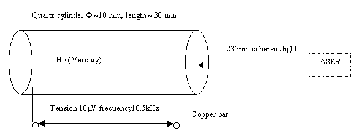
With LASER it is possible to obtain a gain of power (the electrical power of the laser will be less than the one produced by the instrument — greater than ~10 times — but it is essential to have larger power). The stability of the frequency of the electric sinusoid produces in copper conductor a resistance about ~60 times less than the usual resistance, achieving relative superconductivity at normal temperature (~24 °C). I tried to reproduce the same frequency with an electric oscillator, but the phenomenon did not appear; I believe the stability must be several orders greater (~10⁻⁸), and only at that precise frequency does superconductivity appear.
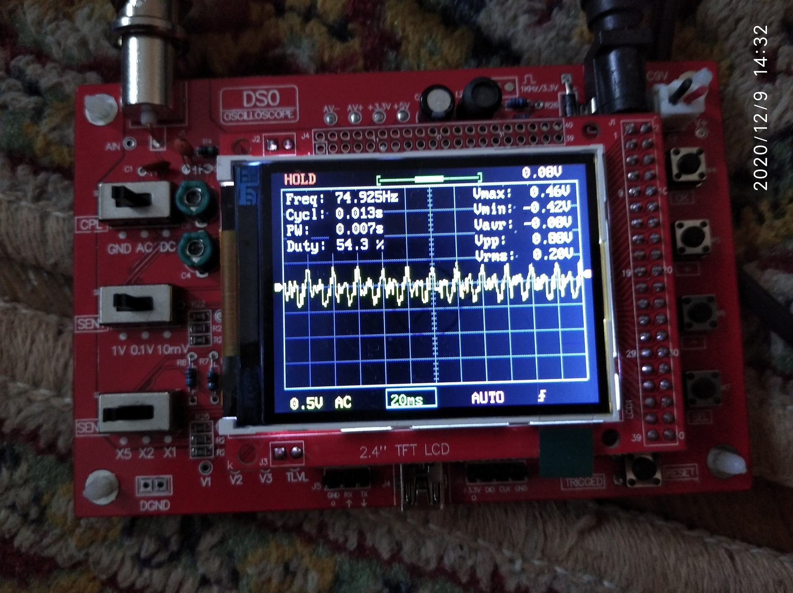
Another metal suitable for energy production is the tin alloy; the frequency is 336–338 nm depending on the temperature of the liquid or solid state. The metal composition is 87% Sn (tin) and 13% Pb (lead). Best energy is obtained above 246 °C in the liquid state.
For a eutectic tin alloy (61.9% Sn, 38.1% Pb) the scheme is the same as for Hg with a 337.5 nm wavelength. Energy released from the nuclear spin magnetic moment: E = 3.9 MeV for Pb207 (22.1% natural abundance); E = 6.62 MeV for Sn117 (7.68%); E = 6.92 MeV for Sn119 (8.59%). We may approximate Sn(117+119) (16.6% with mean E = 6.78 MeV):
E = N₁ · 0.166 · 6.78 MeV · 1.602·10⁻¹⁹ C + N₂ · 3.9 MeV · 0.221 · 1.602·10⁻¹⁹ C = 1.1·10¹⁰ J for 1 kg of tin alloy
where N₁ = 4.751·10²² is the number of Sn(117+119) atoms within 1 kg of alloy and N₂ = 2.33·10²² is the number of Pb atoms. The problem is that the frequency differs from 10.5 kHz and superconductivity will not appear, but the stability is the same as with Hg and may be tuned via resonance compartment waves to a frequency that realizes relative superconductivity at normal temperature (~24 °C).
See the page: GyroMag.pdf.
According to QIT, the frequency of interaction of magnetron and optoelectron is 940–650 MHz; the magnetron interacts with mercury and tin alloy at the most probable frequencies 939.494691 MHz for Hg and 647.6398312 MHz for SnPb. The experiment can be performed with microwaves, but the stability of the electric sinusoid is not suitable for superconductivity — it is variable in the range of dozens to hundreds of Hz. A microwave oven works at ~16 GHz with 700–1000 W power for under $100, so it is a cheap energy solution with a multiplication factor of a few dozens to hundreds. The phenomenon is based on the resonance between the magnetron and the optoelectron particle (per Quarks Informational Theory).
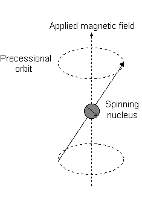
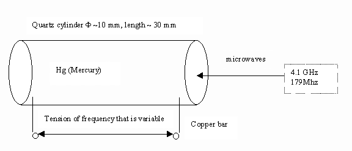
Realize microchips of 5–10 GHz by exposing the silicon circuit to a LASER diode of 760 nm at powers over (5 mW + 1 mW/mm²) of the silicon surface, in a 0.2–2 nm technology containing 10–900 billion transistors per slice. The whole computer can be made on a single microchip (microprocessor, motherboard, video card, network and sound card), with the advantage that the data and address bus can work at higher frequency (performance at low cost).
Use the Corona phenomenon to decrease air friction up to ~10 times by creating a cushion of ionized air. This appears at voltages up to 3 000 000 V (working up to 5 000 000 V, ideally over 9 000 000 V, AC or DC). The entry angle into the atmosphere of rockets can rise from 2.5° up to 10× and the speed limit up to 3× with this voltage. The sonic boom is drastically reduced.
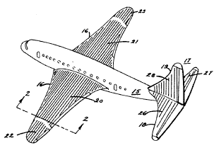
Realize anti-gravity with a ~31 Å (30.8 Å) laser beam in a range of ±1% placed perpendicular to the Earth in the direction of a small object. The phenomenon also appears for a ~381 nm (3804.3 Å, E = 3.259 eV) laser beam in the range 380.43 nm ±1%, easier to obtain with a new LASER based on freon (CFC Cl₂F₂C) and any element of the 8th group (He, Ne, Ar, Kr, Xe, Rn). The wavelength can be modified in the range ~250–500 nm by changing the noble gas. The laser beam must be opposite to gravity and must have a minimal intensity per surface depending on the mass. Microwaves at 575.417 MHz or ~16.1 GHz can also generate antigravity, but require very stable electromagnetic waves of stability ~10⁻⁸.
According to Quarks Informational Theory, it is possible to interact with the quark Time using an elementary particle containing this quark: photon, phonon or Gamma-Ray particle. The easiest way is photon interaction with LASER at ~313.5 nm and ~30.75 Å, but with higher intensity. The required laser-beam power is at least 35 mW/g (for a 20 g watch this means >700 mW). The experiment: cover a small watch (electronic or mechanical) entirely with the laser beam and modify the wavelength in 313.5 nm ±1% until the watch stops. The photon energy E = hν and the Temporal Ionized Energies are ET1 = 3.95 eV and ET2 = 3.95 eV at λ = 3.083 nm (Planck's law modified). The power to sustain 1 kmol of substance is ~3.3 kW (typically 3 – 3.6 kW/kmol). Radio waves at 697.1917627 MHz with very stable electromagnetic waves (Δf/f ~ 10⁻⁸) can generate a Temporal Ionized State.
Practically: cheese in the fridge keeps for days; in a freezer, months; if time is stopped for that piece of cheese, it can be preserved with its initial properties for about a million years, depending on energy provided.
“The moment that flows gives time; the moment that stands gives eternity.”
WHAT IS TIME (short answer): Time is an informational quark — the flux of Tau neutrino, not a river that flows, not entropy. As Einstein said: “Time is what keeps everything from happening at the same time.” See Feynman: YouTube video.
The Ondusculaire theory refers to elementary particles with no mass moving at the speed of light, acting as both wave and particle: phonon, particleT, photon, graviton, magnetron, particleM — and particles with mass moving slower than light (atomic nuclei, positron, electron). The Ondusculaire equation can be obtained starting from the generalized relativistic Onduscular formula:
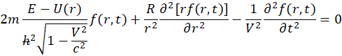
where m is the moving mass, V is the speed, f is the wave function, E₀ is the energy in Rydberg units, l is the azimuthal magnetic number, ε is the vacuum permittivity and ℏ the normed Planck constant. R is a constant distance (R = 3.9228·10²² m) for the particles graviton, particulaT, magnetron, photon and phonon — where the rest mass m₀ = 0. Relativity correction.
Orbital Equilibrium of Helium’s Two Electrons Under the Heisenberg Uncertainty Principle — Schrödinger vs. TauTimp Ondulatory Equation Comparison, with Rigorous Relativistic Correction and the Multi-Body Extension HeliuEch2electr.pdf
Schrödinger vs. the Relativistic TauTimp Ondulatory Equation: Comparative Synthesis for H, He, Li, Be, B, C => SchrodTauTimp.pdf
According to The Graviton Equation document, the Neutrino is the graviton; the amplitude in spherical coordinates is given in The Graviton's Equation Document (PDF).
With k, _c₁ < 0, R > 0 real constants and c the speed of light, applying the Dirichlet condition a(2R, t) = 0 we recover Newton's law of gravity — see the graviton plot with R = 37, c = 3.
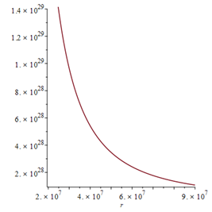
The amplitude of the photon in cylindrical coordinates (Photon.pdf) is:
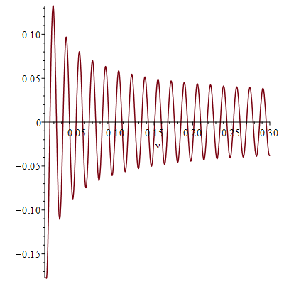
The proton will decompose into a neutron and a positron and will generate a Neutrino which provides gravity and will interact with other nuclei. The light can stop the reaction in the nucleus if it absorbs a certain amount of the energy E = hν.
The atomic reaction generating the neutron, positron and Muon Neutrino is:
¹₁p + τ → ¹₀n + ⁰₊₁pos + ν + Muon Neutrino
The Electronic Neutrino is responsible for the attraction of mass; the process repeats whenever the proton is hit by the tau neutrino. The neutron and tau neutrino regenerate a proton, electron, muon neutrino and electronic neutrino:
¹₀n + τ → ¹₁p + ⁰₋₁e + ν + Muon Neutrino
The nucleus vibrates into orbital and absorption of the same energy E1ω = 3.259 eV will become Gravitonically Ionized: hν = Eω → λ = 3.08 nm → ~30.8 Å. Planck's law is modified, so the energy for the frequency 380.43 nm is E2ω = 3.259 eV — the Gravitonic Ionized State.
The calculation of the power needed to sustain 1 g of substance is based on the assumption that the light ionizes all atoms but does not penetrate more than several microns — farther propagation occurs by photonic scattering coupled with a sort of photovoltaic phenomenon, in which the incident photon gravitonically ionizes the atom which, through stimulated emission, produces a particle identical to the incident photon (Einstein's photoelectron).
Earth–body interaction at the surface: with Earth diameter ~12 742 km and interaction traveling at c ~ 300 000 km/s, we get T = 4.25·10⁻² s, allowing us to calculate the power needed to sustain one gram of mercury (and approximately the same for aluminum). The gravitons that might be stopped traveling through Earth to the contact and antipodal points must be blocked for ~4 hundredths of a second; the laser power must therefore be proportional to Earth's diameter. On the Moon (diameter 3472 km), about 0.8 W/mol would suffice — about a quarter of Earth's requirement, not one-sixth (Moon gravity ~1.6 m/s²). Direct lunar verification would be needed.
Using Brossel's double-resonant method 'Investigating Atomic Energy Levels' for Hg, where the transition from excited to unexcited state is ~4·10⁻⁷ s, our interaction time is t = 4·10⁻⁷ s. The laser must supply power to block gravitons for N = T/t time quanta ≈ 10⁵. Thus:
Eatom = 3.26 [eV] · 1.602·10⁻¹⁹ [C] = 5.22·10⁻¹⁹ [J]
Patom · T/t [W·s] = Eatom [J]
N = T/t = 1.0625·10⁵
Patom ≈ 4.912·10⁻²⁴ W/atom
By Avogadro: 6.022·10²⁶ atoms/mol in 200.6 kg of Hg (density 13 600 kg/m³) → 3·10²¹ atoms in a gram. The needed light power is:
PHg(g) = 0.491·10⁻²³ · 3·10²¹ J/s = 14.74·10⁻³ J/s per g
So ~0.01474 W/g (14.7 mW/g) for Hg, ~2.948 W/mol. For Al (atomic mass 27), PAl(g) = 109.2 mW/g — though the phenomenon is more complex.
Between two Time Quanta, the spin = ½ electron performs a double spin rotation (720°) and reaches the same relative position with respect to the degrees of freedom in space (extends to any ½-spin particle):
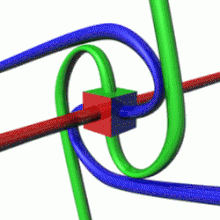
A new LASER with the same power as the CO₂ one, in the UV range 250 nm – 500 nm, based on freon (CFC Cl₂F₂C) & Helium (or any 8th-group element: He, Ne, Ar, Kr, Xe, Rn) can be built with similar parameters as CO₂. The LASER has the same basic function as molecular N₂. CO₂ is similar to CFC + He; by changing the 8th-group element one modifies the optical power and the wavelength in the range ~250 nm – 500 nm.
Conditions for laser action with Cl₂F₂C and He are met:
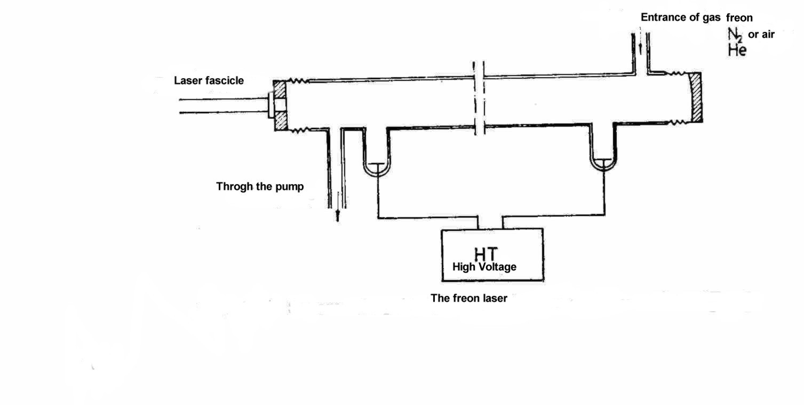
There are 6 informational quarks: mass (M), magnetic (Mg), electricity (E), gravity (G), light (L) and time (T). A particle is always composed of three informational quarks. Two particles may interact if they are neighbouring for at least a Quanta of time, and exchange information. If the sum of interactions for a quark type is 0, another quark may appear; the stable configuration of a new particle consists of three quarks.
The informational quarks correspond to the known quarks as follows:
| Particle | M | Mg | E | G | L | T |
|---|---|---|---|---|---|---|
| Electron | 1 | 1838 | −1 | 0 | 0 | 0 |
| Positron | 1 | −1838 | +1 | 0 | 0 | 0 |
| Monopole RadioFreq / Microwave | 0 / 0 | 1.913 / 1.913 | 0 / 0 | 0 / 1 | 1 / 0 | 1 / 1 |
| Graviton = ν neutrino | 0 | −1838 | 0 | 1 | 1 | 0 |
| Particle P | 1 | 0 | 0 | 1 | 0 | 1 |
| Particle M | 1 | 0 | 0 | −1 | 1 | 0 |
| Phonon | 0 | 0 | 0 | −1 | −1 | 1 |
| Photon (Light) | 0 | 1 | 0 | 0 | 1 | 1 |
| Particle Time = τ neutrino | 0 | 0 | 0 | 1 | 1 | 1 |
| Particle Gamma (γ-ray) | 0 | 0 | 0 | 1 | 1 | −1 |
Sign conventions. A negative magnetic field means the magnetic field is opposite to the spin. A positive time means the propagation speed is the speed of light (3·10⁸ m/s); a negative time means transfer almost instantly (~3·10¹⁷ m/s) — Gamma-ray communication is suitable for long inter-planetary distances. Positive gravity is attraction, negative gravity is repulsion. Positive light is emission, negative light is absorption. Mass is always positive in the local universe.
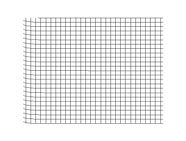
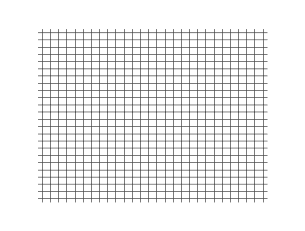
Values must be at least 6–7 digits exact and the frequency stability the same as a laser (Δf/f ~ 10⁻⁸, as obtained for some typical CO₂ laser lines over a 1-hour recording).
| Interaction pair | Frequency #1 | Frequency #2 |
|---|---|---|
| Photon & Graviton | 380.4 nm | 30.8 Å |
| Graviton & Phonon | 432 Hz | 25.6 kHz |
| Phonon & Particle Time | 528 Hz | 25.8 kHz |
| Magnetron & Graviton | 575 MHz | 30 GHz |
Please send your opinion by e-mail: Viorel.popescu@stud.etti.upb.ro and michaelvio@yahoo.com
Thanks to my teachers: Prof. Dr. Doina Mănăilă-Maximean, my PhD supervisor at U.P. Bucharest, Faculty of Applied Science; Prof. Dr. Paul Sterian (my former PhD supervisor, R.I.P.); Prof. Paul Flondor (R.I.P.); Prof. V. Brânzănescu; Prof. Romeo Bercia; Prof. Laurențiu Fara (R.I.P.); and Prof. Iordache Dan (my physics teacher in college, R.I.P.) — who guided me through the research at U.P. Bucharest — and to Prof. Dr. David Harrington from the University of Victoria, British Columbia, Canada.
And especially to Prof. Dr. Rostamian from Brown University / UMBC Baltimore, USA.